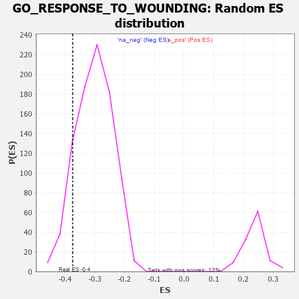

| | | Dataset | 7d |
| Phenotype | NoPhenotypeAvailable |
| Upregulated in class | na_neg |
| GeneSet | GO_RESPONSE_TO_WOUNDING |
| Enrichment Score (ES) | -0.3745346 |
| Normalized Enrichment Score (NES) | -1.2404729 |
| Nominal p-value | 0.116647795 |
| FDR q-value | 0.56062824 |
| FWER p-Value | 1.0 |
Table: GSEA Results Summary
 Fig 1: Enrichment plot: GO_RESPONSE_TO_WOUNDING
Fig 1: Enrichment plot: GO_RESPONSE_TO_WOUNDING
Profile of the Running ES Score & Positions of GeneSet Members on the Rank Ordered List
| PROBE | GENE SYMBOL | GENE_TITLE | RANK IN GENE LIST | RANK METRIC SCORE | RUNNING ES | CORE ENRICHMENT | | 1 | TGFB3 | | | 49 | 2.654 | 0.0430 | No |
| 2 | FOXF1 | | | 176 | 1.136 | 0.0480 | No |
| 3 | BAX | | | 387 | 0.711 | 0.0344 | No |
| 4 | LRP1 | | | 470 | 0.648 | 0.0360 | No |
| 5 | SRF | | | 542 | 0.615 | 0.0384 | No |
| 6 | VASH1 | | | 712 | 0.556 | 0.0272 | No |
| 7 | SRC | | | 1128 | 0.459 | -0.0171 | No |
| 8 | FIBP | | | 1129 | 0.458 | -0.0086 | No |
| 9 | RCOR1 | | | 1211 | 0.445 | -0.0107 | No |
| 10 | P2RY1 | | | 1416 | 0.407 | -0.0291 | No |
| 11 | INHBB | | | 1514 | 0.388 | -0.0342 | No |
| 12 | GATA4 | | | 1837 | 0.330 | -0.0691 | No |
| 13 | RAF1 | | | 2011 | 0.303 | -0.0855 | No |
| 14 | DDR1 | | | 2176 | 0.280 | -0.1012 | No |
| 15 | SYK | | | 2186 | 0.278 | -0.0971 | No |
| 16 | C1QBP | | | 2189 | 0.278 | -0.0923 | No |
| 17 | ANO6 | | | 2339 | 0.255 | -0.1065 | No |
| 18 | DOCK8 | | | 2341 | 0.254 | -0.1019 | No |
| 19 | KDM1A | | | 2447 | 0.237 | -0.1109 | No |
| 20 | VAV3 | | | 2614 | 0.210 | -0.1281 | No |
| 21 | WDR83 | | | 2669 | 0.203 | -0.1312 | No |
| 22 | PHB2 | | | 2712 | 0.197 | -0.1329 | No |
| 23 | LMAN1 | | | 2743 | 0.192 | -0.1332 | No |
| 24 | FGFR2 | | | 2895 | 0.167 | -0.1493 | No |
| 25 | WNT4 | | | 3023 | 0.146 | -0.1627 | No |
| 26 | TLN1 | | | 3030 | 0.145 | -0.1608 | No |
| 27 | PROS1 | | | 3070 | 0.141 | -0.1631 | No |
| 28 | HDAC1 | | | 3086 | 0.138 | -0.1625 | No |
| 29 | RREB1 | | | 3099 | 0.137 | -0.1615 | No |
| 30 | GPX1 | | | 3109 | 0.135 | -0.1601 | No |
| 31 | PAX6 | | | 3170 | 0.127 | -0.1654 | No |
| 32 | SMAD3 | | | 3303 | 0.105 | -0.1803 | No |
| 33 | SARM1 | | | 3432 | 0.086 | -0.1949 | No |
| 34 | CDK5 | | | 3480 | 0.080 | -0.1994 | No |
| 35 | GLI1 | | | 3489 | 0.079 | -0.1990 | No |
| 36 | MAPK3 | | | 3589 | 0.062 | -0.2104 | No |
| 37 | NF1 | | | 3713 | 0.040 | -0.2254 | No |
| 38 | SYT11 | | | 3732 | 0.036 | -0.2270 | No |
| 39 | ITPK1 | | | 3851 | 0.020 | -0.2416 | No |
| 40 | DGKQ | | | 3856 | 0.020 | -0.2417 | No |
| 41 | DGKZ | | | 3879 | 0.015 | -0.2443 | No |
| 42 | TOR1A | | | 4030 | -0.013 | -0.2631 | No |
| 43 | MTOR | | | 4114 | -0.025 | -0.2732 | No |
| 44 | CRK | | | 4139 | -0.031 | -0.2757 | No |
| 45 | HNF4A | | | 4157 | -0.034 | -0.2772 | No |
| 46 | HPS5 | | | 4164 | -0.036 | -0.2773 | No |
| 47 | PDX1 | | | 4179 | -0.038 | -0.2784 | No |
| 48 | TIMP1 | | | 4209 | -0.043 | -0.2813 | No |
| 49 | USF1 | | | 4296 | -0.059 | -0.2911 | No |
| 50 | CD109 | | | 4325 | -0.064 | -0.2935 | No |
| 51 | ARF4 | | | 4383 | -0.073 | -0.2994 | No |
| 52 | ILK | | | 4510 | -0.096 | -0.3137 | No |
| 53 | WNT5B | | | 4517 | -0.098 | -0.3126 | No |
| 54 | ADTRP | | | 4612 | -0.120 | -0.3223 | No |
| 55 | GATA3 | | | 4614 | -0.120 | -0.3202 | No |
| 56 | MYLK | | | 4651 | -0.128 | -0.3224 | No |
| 57 | ITPR1 | | | 4661 | -0.130 | -0.3212 | No |
| 58 | PTK7 | | | 4687 | -0.136 | -0.3218 | No |
| 59 | FBLN1 | | | 4748 | -0.149 | -0.3267 | No |
| 60 | CD151 | | | 4791 | -0.156 | -0.3292 | No |
| 61 | P2RX4 | | | 4813 | -0.161 | -0.3288 | No |
| 62 | MORN4 | | | 4815 | -0.161 | -0.3260 | No |
| 63 | CAPZB | | | 4908 | -0.179 | -0.3344 | No |
| 64 | KLF4 | | | 5005 | -0.198 | -0.3429 | No |
| 65 | PDPK1 | | | 5043 | -0.207 | -0.3438 | No |
| 66 | DRD2 | | | 5088 | -0.221 | -0.3453 | No |
| 67 | ENPP4 | | | 5189 | -0.245 | -0.3534 | No |
| 68 | GPR4 | | | 5219 | -0.250 | -0.3525 | No |
| 69 | PTEN | | | 5262 | -0.261 | -0.3530 | No |
| 70 | CDK1 | | | 5264 | -0.262 | -0.3483 | No |
| 71 | EPHA4 | | | 5273 | -0.265 | -0.3444 | No |
| 72 | CD9 | | | 5319 | -0.277 | -0.3450 | No |
| 73 | ITPR3 | | | 5361 | -0.288 | -0.3449 | No |
| 74 | LRIG2 | | | 5460 | -0.310 | -0.3516 | No |
| 75 | TFPI2 | | | 5516 | -0.324 | -0.3526 | No |
| 76 | EHD1 | | | 5560 | -0.336 | -0.3518 | No |
| 77 | VPS45 | | | 5618 | -0.350 | -0.3526 | No |
| 78 | DGKI | | | 5725 | -0.384 | -0.3589 | No |
| 79 | TRPC6 | | | 5784 | -0.401 | -0.3589 | No |
| 80 | DOCK1 | | | 5908 | -0.438 | -0.3664 | Yes |
| 81 | SH2B1 | | | 5963 | -0.459 | -0.3648 | Yes |
| 82 | XBP1 | | | 6011 | -0.475 | -0.3619 | Yes |
| 83 | TRPC3 | | | 6035 | -0.483 | -0.3559 | Yes |
| 84 | RAC1 | | | 6036 | -0.484 | -0.3470 | Yes |
| 85 | SMAD2 | | | 6216 | -0.541 | -0.3597 | Yes |
| 86 | TPM1 | | | 6226 | -0.545 | -0.3507 | Yes |
| 87 | CDC42 | | | 6236 | -0.548 | -0.3417 | Yes |
| 88 | SYTL4 | | | 6304 | -0.578 | -0.3395 | Yes |
| 89 | SOX2 | | | 6477 | -0.652 | -0.3493 | Yes |
| 90 | DYSF | | | 6481 | -0.654 | -0.3376 | Yes |
| 91 | KANK1 | | | 6536 | -0.678 | -0.3319 | Yes |
| 92 | STK24 | | | 6550 | -0.684 | -0.3209 | Yes |
| 93 | P2RX5 | | | 6576 | -0.699 | -0.3111 | Yes |
| 94 | VWF | | | 6593 | -0.706 | -0.3000 | Yes |
| 95 | PTPRS | | | 6646 | -0.738 | -0.2930 | Yes |
| 96 | RAB5A | | | 6655 | -0.741 | -0.2803 | Yes |
| 97 | CERS2 | | | 6689 | -0.756 | -0.2704 | Yes |
| 98 | PAK1 | | | 6691 | -0.757 | -0.2565 | Yes |
| 99 | EGFR | | | 6708 | -0.765 | -0.2444 | Yes |
| 100 | PLEC | | | 6892 | -0.864 | -0.2517 | Yes |
| 101 | PTPRF | | | 6908 | -0.872 | -0.2374 | Yes |
| 102 | CCR2 | | | 7003 | -0.939 | -0.2320 | Yes |
| 103 | MYH10 | | | 7048 | -0.966 | -0.2197 | Yes |
| 104 | TSPO | | | 7194 | -1.065 | -0.2184 | Yes |
| 105 | MFN2 | | | 7208 | -1.081 | -0.2000 | Yes |
| 106 | KLKB1 | | | 7216 | -1.090 | -0.1807 | Yes |
| 107 | MSX2 | | | 7299 | -1.171 | -0.1694 | Yes |
| 108 | GRN | | | 7319 | -1.194 | -0.1497 | Yes |
| 109 | PLPP3 | | | 7740 | -1.876 | -0.1684 | Yes |
| 110 | CASP3 | | | 7747 | -1.902 | -0.1339 | Yes |
| 111 | FYN | | | 7881 | -2.622 | -0.1022 | Yes |
| 112 | CAV3 | | | 7896 | -2.739 | -0.0532 | Yes |
| 113 | ARRB1 | | | 7935 | -3.377 | 0.0046 | Yes |
Table: GSEA details [plain text format]

Fig 2: GO_RESPONSE_TO_WOUNDING: Random ES distribution
Gene set null distribution of ES for GO_RESPONSE_TO_WOUNDING